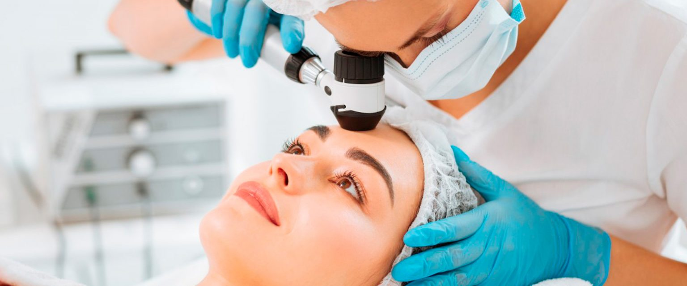

DERMATOLOGÍA
La dermatología es una especialidad de la medicina que se ocupa del nocimiento y estudio de la piel humana y de las enfermedades que la afectan. Esta especialidad también se preocupa de la prevención de las enfermedades y de la preservación o la recuperación de la normalidad cutánea así como de la dermocosmética que se dedica a la higiene, a la apariencia y protección de la piel.
Como ejemplos de algunas áreas de estudio y dedicación de la especialidad podemos destacar.
Los eczemas: Son una enfermedad inflamatoria superficial de la piel (dermatitis) que producen picor, enrojecimiento de la piel, vesículas, edema y exudación de líquido seroso. La investigación de los eczemas precisa de la realización de pruebas de alergia cuya interpretación requiere especial dedicación y conocimiento.
Cáncer cutáneo: Dentro de la dermatología es muy importante el estudio de los tumores. Los dermatólogos se dedican tanto a los estudios básicos del cáncer para tratar de comprender el problema del cáncer en el laboratorio como a la oncología clínica aplicada a los seres humanos en el diagnóstico, tratamiento y manejo general del paciente con esta enfermedad así como a la importante labor de la prevención. En la actualidad existen multitud de formas de tratamiento que van desde la cirugía hasta novedosos recursos médicos, como el uso de agentes antitumorales entre los que se encuentran la terapia fotodinámica, quimioterapia y uso de modificadores de la respuesta biológica entre otros muchos.
Dermatología Pediátrica: la dermatología debe de tener en cuenta las diferentes etapas del hombre durante la vida para reconocer sus variaciones. De estas, una de las mas importantes es la edad infantil ya que a la especial y delicada constitución de la piel de los niños se suma la posibilidad de que existan enfermedades propias de la infancia, difíciles de reconocer para el no especialista.
Galeria